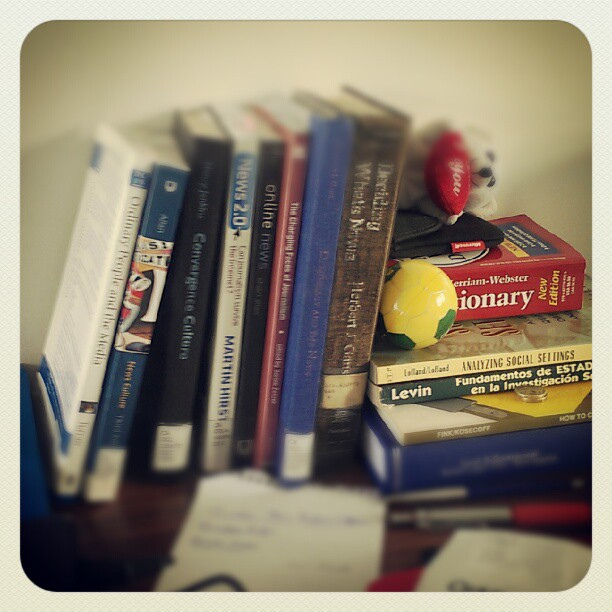

        <ul class="sidebar-nav">
          <li class="sidebar-brand">
            <a href="index.html">
              <figure><figcaption>EDU 307</figcaption></figure>
            </a>
          </li>
          <li><a href="http://edu307syllabus.networkedlearningcollaborative.com/">Syllabus</a></li>
          <li><a href="module1.html">What is Children&#39;s Literature?</a></li>
          <li><a href="module2.html">Elements of Literature</a></li>
          <li><a href="module3.html">Literacies and Worldviews</a></li>
          <li><a href="module4.html">Workshop Methods</a></li>
          <li><a href="module5.html">Literature and Foundational Skills</a></li>
          <li><a href="module6.html">Poetry</a></li>
          <li><a href="module7.html">Picture Books</a></li>
          <li><a href="module8.html">Fables</a></li>
          <li><a href="module9.html">Myths</a></li>
          <li><a href="module10.html">Fantasy</a></li>
          <li><a href="module11.html">Biography</a></li>
          <li><a href="module12.html">Realistic Fiction</a></li>
        </ul>
